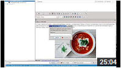
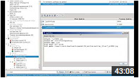

|
MyTetra v.1.42 - подробный обзор |
22-11-2016 |
|
|
После пяти лет разработки доступна для скачивания новая, юбилейная версия программы накопления информации MyTetra v.1.42!
По причине сильной занятости автора на основной работе, которая далека от IT и программирования, новый функционал дорабатывался медленно. Зато изменений много, и программа обрела черты зрелости.
Изменения в версии MyTetra 1.42
В версии 1.42 были произведены следующие доработки:
В предыдущих обзорах (v.1.28 и v.1.30) все изменения были подробно расписаны в тексте обзора. В этот раз я решил отойти от этой традиции, и вместо длинного текста выкладываю видео, в котором рассказываю об основных приемах работы с MyTetra и о нововведениях в версии 1.42.
Видеообзор MyTetra v.1.42
Часть 1 - Обзор основных возможностей MyTetra v.1.42
Содержание:
Часть 2 - Настройки программы MyTetra v.1.42 Содержание:

Часть 3 - Нововведения в MyTetra v.1.42
Содержание:

Установка MyTetra
Если вы первый раз устанавливаете MyTetra, то эта информация для вас.
Пользователям Linux
MyTetra для операционной системы Linux поставляется в двух видах. Первый - бинарная сборка в виде переносимого приложения со всеми необходимыми библиотеками. Второй - в виде исходников.
Установка бинарной сборки проста: распакуйте содержимое архива в любую директорию, например в /opt/mytetra, и запустите на выполнение файл mytetra.run. В этом режиме mytetra работает с данными, расположенными в той же директории, что и исполняемый файл (данные лежат в подкаталоге /data). Это называется "режим переносимого приложения".
Установка из исходников стандартна. Убедитесь, что у вас установлен фреймверк Qt 5.4.2 или выше. Распакуйте сдержимое архива с исходниками в любую директорию. Зайдите в эту директорию и дайте команды:
qmake mytetra.pro
Тем самым вы запустите сборку программы MyTetra. Если сборка завершилась успешно, для инсталляции программы нужно выполнить команду:
sudo make install
Или можно воспользоваться другим способом финальной инсталляции, например программой checkinstall. Запуск программы MyTetra следует производить с помощью команды:
mytetra
или запускайте MyTetra из меню KDE/Gnome.
Пользователям Windows
Для операционной системы Windows программа MyTetra поставляется в виде переносимого приложения. Распакуйте архив с программой в любой подкаталог, и запустите на выполнение файл mytetra.exe.
Обновление MyTetra
Если вы уже являетесь пользователем MyTetra, и хотите обновить версию до v.1.42, то эта информация для вас.
Пользователям Linux
Если вы используете бинарную сборку MyTetra в виде переносимого приложения, то вам нужно скачать бинарную версию MyTetra 1.42. Замените исполняемый файл и все библиотеки (со всеми подкаталогами), взяв их из скачанного архива. Если вы пользуетесь MyTetra, установленной из исходников или из репозитария, то нужно деинсталлировать штатными средствами старую версию MyTetra. При этом, накопленные данные MyTetra удалены не будут. Затем проинсталлируйте новую версию MyTetra из исходников. Новая версия автоматически подхватит все настройки и данные, которые были в старой версии.
Можно поступить по-другому: соберите бинарник MyTetra из исходников, но не запускайте команду "sudo make install". Просто замените бинарник /usr/local/bin/mytetra на тот, который получили при компиляции. Данный метод возможен только в том случае, если в системе установлен фреймверк Qt 5.4.2 или выше, и его библиотеки доступны по стандартным путям.
Пользователям Windows
Замените файл mytetra.exe и все *.dll файлы в директории программы MyTetra на файлы из установочного архива. Замените поддиректории с *.dll файлами на поддиректории с таким же названием из установочного архива.
Обратная связь
По всем вопросам, возникащим по установке и использованию MyTetra v.1.42, пишите в специально созданную для этого ветку форума: MyTetra v.1.32.320 RC1 и v.1.42.x.
| ||